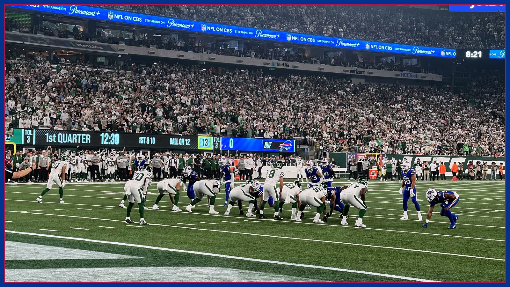

Buffalo Bills are favored by a mile at the Jets. Nobody in Buffalo is relaxed.
Buffalo (7-1) visits the New York Jets (2-7) on Sunday at 1 PM ET at MetLife Stadium. The Buffalo Bills have won five straight in this series, outscoring the Jets 160-58, per NorthJersey.com — and The Tailgate is still nervous. Here are the five reasons, ranked.

On paper, this is not a football game. It is a formality. Buffalo is 7-1 and visits the New York Jets (2-7) on Sunday, Nov. 15 at 1 PM ET at MetLife Stadium on CBS. Per NBC Sports' preview, the Buffalo Bills own the NFL's highest-scoring offense at 32.0 points per game and lead the league with 386.4 yards per game. The Jets, per NorthJersey.com, have lost four in a row, just lost 35-12 at Kansas City, have dropped five straight to Buffalo and have been outscored 160-58 in those five games without reaching 21 points in any of them. So why is nobody in Western New York relaxed? Because Bills fans have seen this movie, and The Tailgate has ranked the five reasons Sunday still feels like a trap.
Reason No. 5: the short week is real. Buffalo just played on Monday night in Minnesota — a 23-6 road win in which the Buffalo Bills held the ball for 42 minutes, 32 seconds, their most time of possession in a road game ending in regulation since at least 1981, per the Associated Press. The reward, per NBC Sports, is a short turnaround and another road trip, this time six hours east to New Jersey. Monday night adrenaline is great. Tuesday morning legs are not, and a 1 PM Sunday kickoff does not care how good you looked on national TV.
Reason No. 4: the injury list is longer than the Jets' win column jokes write themselves — but it is also real. Buffalo won in Minnesota without its starting left side, Dion Dawkins (rib) and Alec Anderson (ankle), and both are listed as to-be-determined for Jets week, per DraftKings Network's Week 10 report. Four more Buffalo Bills needed medical attention Monday night, per Bills on SI: right tackle Spencer Brown rolled his ankle and played every snap until the final kneel-downs, tight end Dalton Kincaid rolled his ankle and returned after taping, safety Damar Hamlin reportedly cramped and received an IV and missed only four snaps, and cornerback Christian Benford jammed his wrist tackling Justin Jefferson. Benford's X-rays were negative, per the Buffalo News' Jay Skurski via Bills on SI, and he stayed on the sideline in uniform after logging 28 of 48 defensive snaps — encouraging, not settled. Wide receiver Joshua Palmer (hamstring) was placed on injured reserve before the Vikings game. Wednesday's first Jets-week practice report, due today in Orchard Park, is the first real clue about who is actually available.
Reason No. 3: the Jets have exactly one get-out-of-jail card, and his name is Garrett Wilson. Wilson missed the Kansas City loss with a concussion, per the Democrat and Chronicle, and he must clear the NFL's concussion protocol before he can face Buffalo. A Jets offense that scored 12 points last week and, per azcentral's picks coverage, watched Geno Smith take five sacks against the Chiefs is a very different assignment with its No. 1 receiver than without him. Buffalo's newest safety, Amani Hooker, may or may not be part of the answer yet: general manager Brandon Beane said Tuesday that Hooker's availability for Sunday remains uncertain while he learns Jim Leonhard's defense, per the Democrat and Chronicle — he has, in Beane's words, a lot of catching up to do. If Wilson clears and Hooker watches, the matchup gets spicier than 2-7 suggests.
Reason No. 2: the schedule after Sunday is a gauntlet, and everybody knows it. Per Athlon Sports' look at the Hooker trade, after the Jets and the Miami Dolphins, Buffalo runs into a five-game stretch against the Kansas City Chiefs, New England Patriots, Green Bay Packers, Chicago Bears and Denver Broncos. That is why Sunday is not just a game Buffalo should win — it is a game Buffalo cannot afford to donate. The Buffalo Bills sit atop the AFC East and, per NorthJersey.com, currently hold the AFC's No. 1 seed. Seeds are not lost in January. They are lost on sleepy Sundays in November against 2-7 division rivals you were supposed to bury by halftime.
Reason No. 1: it is the Jets, at MetLife, in the division. Forget the records for one paragraph and remember the rule every Buffalo Bills fan learns young: divisional road games do not read the standings out loud before kickoff. Buffalo has won eight of the past ten meetings, per NBC Sports, and five straight, per the AP — and none of that history has ever once blocked, tackled or covered anybody on a given Sunday. The Jets have nothing to protect and nothing to lose, which in this league is the most annoying opponent profile there is. A team playing out its season gets to spend four quarters throwing every weird look it saved all year at the team with everything to lose.
So here is The Tailgate's official position, and we are sticking to it: Buffalo should win, probably comfortably — the talent gap, the No. 1 offense and James Cook's ground game are all real, and Cook and this run game travel in any weather, in any building. But 'should' is doing a lot of work in that sentence until the Buffalo Bills prove the short week, the left side of the line and Benford's wrist are footnotes instead of plot twists. Nervous is not the same as doubting. It is just what five decades of being a Buffalo Bills fan does to a person by Wednesday. Handle business early, get out of New Jersey healthy, and let the rest of the league play the trap games. Go Bills — and get every Jets-week injury update in your inbox every morning with The BNC Blitz.
The BNC Blitz is free: the day's Bills news, one stat that matters, and one take, every morning. Join to keep reading — and never miss the end of a story again.